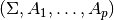
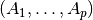
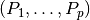
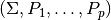
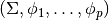

statsmodels.tsa.statespace.tools.constrain_stationary_multivariate¶
-
statsmodels.tsa.statespace.tools.constrain_stationary_multivariate(unconstrained, variance, transform_variance=False, prefix=None)[source]¶ Transform unconstrained parameters used by the optimizer to constrained parameters used in likelihood evaluation for a vector autoregression.
Parameters: unconstrained : array or list
Arbitrary matrices to be transformed to stationary coefficient matrices of the VAR. If a list, should be a list of length order, where each element is an array sized k_endog x k_endog. If an array, should be the matrices horizontally concatenated and sized k_endog x k_endog * order.
error_variance : array
The variance / covariance matrix of the error term. Should be sized k_endog x k_endog. This is used as input in the algorithm even if is not transformed by it (when transform_variance is False). The error term variance is required input when transformation is used either to force an autoregressive component to be stationary or to force a moving average component to be invertible.
transform_variance : boolean, optional
Whether or not to transform the error variance term. This option is not typically used, and the default is False.
prefix : {‘s’,’d’,’c’,’z’}, optional
The appropriate BLAS prefix to use for the passed datatypes. Only use if absolutely sure that the prefix is correct or an error will result.
Returns: constrained : array or list
Transformed coefficient matrices leading to a stationary VAR representation. Will match the type of the passed unconstrained variable (so if a list was passed, a list will be returned).
Notes
In the notation of [R100], the arguments (variance, unconstrained) are written as , where
 is the order
of the vector autoregression, and is here determined by the length of
the unconstrained argument.
is the order
of the vector autoregression, and is here determined by the length of
the unconstrained argument.There are two steps in the constraining algorithm.
First,  are transformed into  via Lemma 2.2 of [R100].
Second,  are transformed into  via Lemmas 2.1 and 2.3 of [R100].
If transform_variance=True, then only Lemma 2.1 is applied in the second step.
While this function can be used even in the univariate case, it is much slower, so in that case constrain_stationary_univariate is preferred.
References
[R100] (1, 2, 3, 4) Ansley, Craig F., and Robert Kohn. 1986. “A Note on Reparameterizing a Vector Autoregressive Moving Average Model to Enforce Stationarity.” Journal of Statistical Computation and Simulation 24 (2): 99-106. [R101] Ansley, Craig F, and Paul Newbold. 1979. “Multivariate Partial Autocorrelations.” In Proceedings of the Business and Economic Statistics Section, 349-53. American Statistical Association